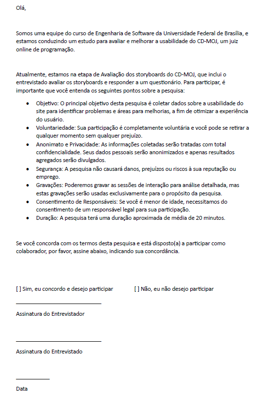

Planejamento da Avaliação do Protótipo de Alta Fidelidade
Introdução
A prototipação desempenha um papel fundamental no desenvolvimento de representações visuais de ideias, melhorando a comunicação dentro da equipe, testando conceitos e fomentando a reflexão sobre o design. Os protótipos ajudam a esclarecer dúvidas, servem como fonte de alternativas, avaliam a viabilidade técnica, ajudam a definir requisitos imprecisos e são essenciais para conduzir testes com usuários e realizar avaliações1. Neste artefato iremos planejar nossos objetivos e avaliações do protótipo de alta-fidelidade, desenvolvidos pelo grupo 01, para fins de estudo da plataforma CD-MOJ na disciplina Interação Humano-Computador.
Objetivo
O objetivo deste planejamento é estabelecer métricas claras para os protótipos de alta-fidelidade, um sistema de juiz online. Uma ou mais metodologias serão definidas e cuidadosamente seguidas para garantir a obtenção de resultados consistentes e confiáveis da avaliação. Os objetivos deste planejamento das avaliações são detalhados a seguir:
- Avaliar a apropriação de tecnologia pelos usuários: Esta avaliação verificará se o protótipo está de acordo com o contexto do sistema, se os objetivos sobre a especificação do artefato é cumprido e se há alguma necessidade a mais para a satisfação daquele propósito4.
- Explorar ideias e alternativas de design: Os processos de avaliação ajudará a visualizar a experiência do usuário, verificando quais das funcionalidas são melhores na percepção do usuário em relação ao tempo, facilidade de aprendizado, preferência, entre outros4.
- Garantir a conformidade com padrões estabelecidos: Verificar se o sistema tem algum padrão definido de acessibilidade e se seguem convenções estabelecidas no domínio4.
- Identificar problemas na interação e na interface durante a fase do modelo conceitual: A avaliação dos protótipos irá auxiliar a identificar problemas de interface ou interação, verificando se o usuário conseguirá operar o sistema, se atinge seu objetivo, se há insatisfação em alguma etapa do processo e se irá entender como deve prosseguir4.
Metodologia
Para nos auxiliar nesse planejamento de avalição dos protótipos, na execução e na análise de uma avaliação de IHC, primeiramente utilizaremos o framework DECIDE, proposto por Sharp, Rogers e Preece (2007)6. Esse framework possui atividades interligadas e executadas iterativamente, com os objetivos articulados a partir do avaliador a partir dos recursos disponíveis7. Ele nos oferece a lista de checagem correspondente sobre o que está sendo avaliado, conforme a tabela1 representada a seguir:
Tabela 1 - Lista de checagem do framework DECIDE.
| Letra | Definição |
|---|---|
| D | Determinar as metas que a avaliação irá abordar. |
| E | Explorar as questões específicas a serem respondidas com a avaliação. |
| C | Escolher o paradigma de avaliação e as técnicas de respostas para as perguntas. |
| I | Identificar as questões práticas que devem ser abordadas, como a seleção dos participantes. |
| D | Decidir como lidar com as questões éticas. |
| E | Avaliar, interpretar e apresentar os dados. |
Fonte: Design de Interação: Além da Interação Humano-Computador. Capítulo 11.3: DECIDE: um framework para orientar a avaliação7.
Framework DECIDE
D - Metas
O processo de avaliação básica de um projeto de IHC consiste em três etapas, preparação, coleta e interpretação, o qual permitirá, por meio da análise dele, desenvolver melhorias de design para a aplicação estudada caso necessário9.
A avaliação tem como objetivo permitir que os entrevistados examinem os protótipos de alta fidelidade criados para planejar interações e funcionalidades no CDMOJ. Essa análise visa identificar problemas de usabilidade e design, contribuindo para o aprimoramento do produto. Por meio dessa avaliação, espera-se que os participantes colaborem na verificação e validação dos protótipos, garantindo que eles estejam alinhados com as necessidades dos usuários. Além disso, o feedback dos usuários será coletado através de pesquisas e entrevistas após as sessões de teste, fornecendo dados cruciais para a validação das mudanças sugeridas. Um cronograma definido orientará a realização das avaliações e a implementação das alterações, com critérios claros de aceitação para os protótipos revisados, focando em precisão, relevância e facilidade de uso.
E - Explorar questões respondidas a partir da avaliação
A partir dos objetivos, foram elaboradas perguntas específicas que servem para orientar a investigação e facilitar a análise crítica necessária. Essas perguntas são essenciais para a operacionalização do processo de avaliação, permitindo que se faça um julgamento de valor sobre os aspectos analisados10. Veja na tabela 2, o que pretende-se ter como resposta após a aplicação do questionário.
Tabela 2 - Questões para serem respondidas a partir da avaliação
| Número | Pergunta | O que se espera? |
|---|---|---|
| 1 | A prototipação representa bem o seu propósito? | As respostas às perguntas 1 e 6 ajudarão a verificar se o protótipo cumpre seu propósito principal e se é intuitivo. |
| 2 | O layout corresponde com as expectativas do usuário? | Utilizando as respostas das perguntas 2, 5 e 12, avaliaremos se o layout atende às expectativas dos usuários e facilita a interação. |
| 3 | Os aspectos de usabilidade estão claros? | As respostas às perguntas 3, 7 e 9 permitirão entender se a usabilidade está adequada e se as funcionalidades são compreendidas facilmente. |
| 4 | Há elementos do protótipo que dificultam a visualização ou uso? | Através das respostas às perguntas 4, 8 e 11, identificaremos elementos que podem estar prejudicando a experiência do usuário, seja por má visualização ou compreensão deficiente. |
| 5 | O protótipo proporciona uma experiência satisfatória? | Analisando as respostas para a pergunta 13, determinaremos o nível geral de satisfação dos usuários com o protótipo, considerando a eficiência e a clareza da interação proposta. |
Fonte: Arthur Alves.
As perguntas selecionadas têm o objetivo de serem respondidas com esta avaliação e serão discutidas posteriormente no tópico Roteiro de Perguntas.
C - Escolher paradimas de avaliação e técnicas para as perguntas
Os métodos de investigação (inquiry) envolvem o uso de questionários, a realização de entrevistas, grupos de foco e estudos de campo, entre outros. Esses métodos permitem ao avaliador ter acesso, interpretar e analisar concepções, opiniões, expectativas e comportamentos do usuário relacionados com sistemas interativos. Em particular, permitem investigar alternativas de design, problemas que os usuários costumam enfrentar, como eles se apropriaram da tecnologia existente e quais são suas expectativas para futuras interações com tecnologias atuais e novas.11
A escolha dos métodos de investigação foi baseada em critérios estratégicos e práticos. Primeiramente, a familiaridade do nosso grupo com a plataforma foi um fator determinante. Esse conhecimento do CDMOJ permitiu que desenvolvêssemos questionários e conduzíssemos entrevistas de maneira mais informada e focada, melhorando a relevância e a precisão das perguntas feitas para os entrevistados.
Ainda, a disponibilidade e acessibilidade de uma base de usuários ativa dentro do contexto que o CDMOJ é amplamente utilizado, na FGA, facilitaram significativamente a logística de conduzir grupos de foco e estudos de campo. Esse acesso direto aos usuários permitiu a coleta de dados autênticos e imediatos sobre como eles interagem com o sistema e quais são suas verdadeiras necessidades e dificuldades.
Esses métodos foram escolhidos não só por sua eficácia em obter feedback detalhado e qualitativo, mas também pela capacidade de explorar profundamente as dinâmicas de uso do sistema. Isso foi crucial para identificar não apenas as necessidades atuais, mas também para antecipar exigências futuras e ajustar o desenvolvimento do protótipo final.
I - Identificações das questões práticas que serão abordadas
Recrutamento e Local
É crucial selecionar participantes que possuam um perfil alinhado às demandas específicas e realidades do sistema. Para isso, utilizamos o artefato Perfil de Usuário como base fundamental para o recrutamento. Este perfil foi desenhado para refletir as características, necessidades e comportamentos típicos dos usuários do CDMOJ, garantindo que os insights coletados durante a avaliação sejam pertinentes e aplicáveis. O recrutamento é realizado diretamente dentro do contexto acadêmico, aproveitando a acessibilidade e a disponibilidade de uma base de usuários engajada. Isso não só facilita a logística de organização das sessões de avaliação, mas também assegura que os participantes estejam genuinamente familiarizados com o sistema, o que é essencial para obter feedback autêntico e preciso.
Cada um dos seis integrantes do nosso grupo desenvolveu uma tarefa para o protótipo de alta fidelidade, resultando em um total de seis tarefas a serem avaliadas. Para garantir uma análise abrangente e detalhada, optamos por recrutar seis pessoas para o processo de entrevista. Cada entrevistado será responsável por analisar uma tarefa. Essa divisão foi estrategicamente planejada para maximizar a cobertura de feedback sobre as diferentes tarefas no protótipo, enquanto se mantém uma carga gerenciável para cada participante.
As entrevistas para a avaliação dos protótipos de alta fidelidade criados para o CDMOJ serão conduzidas de forma presencial. Esta abordagem permite uma interação direta e pessoal com todos os participantes, facilitando uma comunicação mais rica e detalhada. Ao realizar as sessões de avaliação presencialmente, teremos a oportunidade de observar as reações físicas e capturar detalhes que podem não ser tão evidentes caso fosse conduzido de forma online. Isso será valioso para enriquecer o processo de análise e contribuir para o refinamento dos protótipos.
Roteiro de Perguntas
Ao criar as perguntas, veja na tabela 3, levou-se em consideração o perfil e as atividades dos usuários-alvo para assegurar que a avaliação gere dados que contribuam significativamente para o refinamento do protótipo final.
Tabela 3 - Roteiro de perguntas
| ID | Pergunta | Propósito | Resposta |
|---|---|---|---|
| 1 | A prototipação representa bem o seu propósito? | Verificação de conformidade com a tarefa. | [ ] Sim [ ] Não |
| 2 | O layout corresponde com as expectativas do usuário sobre como deveria ser a tela? | Verificação de aderência às expectativas do usuário. | [ ] Sim [ ] Não |
| 3 | Os aspectos de usabilidade estão bem evidentes na prototipação? | Avaliação da clareza e facilidade de uso. | [ ] Sim [ ] Não |
| 4 | A prototipação oferece dificuldades sobre visualização do conteúdo da tela? | Identificação de problemas de visibilidade e legibilidade. | [ ] Sim [ ] Não |
| 5 | Os elementos interativos estão claramente identificados? | Verificação da identificação clara de elementos clicáveis e interativos. | [ ] Sim [ ] Não |
| 6 | O fluxo de navegação está intuitivo? | Avaliação da facilidade de navegação e sequência lógica das telas. | [ ] Sim [ ] Não |
| 7 | O protótipo permite uma fácil compreensão das funcionalidades? | Verificação da clareza das funcionalidades apresentadas. | [ ] Sim [ ] Não |
| 8 | Há algum elemento ou informação que esteja faltando? | Identificação de lacunas ou elementos ausentes. | Resposta aberta |
| 9 | A estrutura da informação está organizada de forma lógica? | Avaliação da organização e hierarquia da informação. | [ ] Sim [ ] Não |
| 10 | O protótipo permite a realização das tarefas principais de forma eficiente? | Verificação da eficiência na realização de tarefas principais. | [ ] Sim [ ] Não |
| 11 | Existem barreiras que dificultam a execução de ações pelo usuário? | Identificação de barreiras ou dificuldades na interação. | [ ] Sim [ ] Não |
| 12 | A disposição dos elementos na tela facilita a execução das tarefas? | Avaliação da disposição e acessibilidade dos elementos. | [ ] Sim [ ] Não |
| 13 | O protótipo proporciona uma experiência satisfatória para o usuário? | Avaliação geral da satisfação do usuário com o protótipo. | [ ] Sim [ ] Não |
Fonte: Arthur Alves.
Preparação
Antes de iniciar as entrevistas para a avaliação dos protótipos, faremos uma preparação para garantir a eficácia do processo. Esta preparação envolve várias etapas cruciais que são projetadas para alinhar o processo avaliativo com os objetivos específicos de nosso estudo e garantir que ele seja capaz de capturar dados relevantes e precisos.
O entrevistador desempenhará um papel crucial. Eles serão encarregados de conduzir as entrevistas com base em um roteiro previamente definido, que contém perguntas detalhadas elaboradas para explorar a interação dos usuários com os protótipos. Além de fazer perguntas, os entrevistadores terão a responsabilidade de registrar as respostas dos participantes, garantindo que todas as nuances e detalhes importantes sejam capturados.
As entrevistas envolverão interações diretas com os protótipos criados, permitindo que os usuários demonstrem como navegam, interagem e interpretam. Isso proporcionará uma avaliação prática e dinâmica de como os protótipos representam a experiência do usuário. Para uma coleta de dados mais rica, será solicitado aos usuários que compartilhem suas telas durante a entrevista. Esta prática permitirá observar diretamente as interações dos usuários, a fim de coletar dados de observação comportamental ao processo de avaliação. O papel do entrevistador será assumido pelo integrante do grupo que criou a tarefa no protótipo, que terá como responsabilidade conduzir as perguntas e registrar as respostas.
Por fim, antes de iniciar as entrevistas oficiais, um teste piloto será realizado com dois membros do grupo para testar e aplicar o roteiro de perguntas e o processo de entrevista. Este piloto é essencial para identificar quaisquer áreas que possam precisar de ajustes e garantir que o instrumento de avaliação seja tão eficaz e informativo quanto possível
Custo
As entrevistas para avaliação serão realizadas presencialmente na Universidade de Brasília - Faculdade do Gama (FGA). Essa escolha estratégica assegura que não haverá custos adicionais tanto para os participantes quanto para a equipe organizadora, uma vez que todos os entrevistados são membros da FGA. As atividades serão conduzidas em espaços já disponíveis na universidade, o que elimina a necessidade de aluguel de locais externos ou despesas com transporte, já que os participantes são locais. Realizar as sessões de forma presencial na própria faculdade não apenas minimiza os custos logísticos, mas também facilita a participação de todos os envolvidos, maximizando a conveniência e a eficácia da avaliação.
Equipamentos Necessários
Durante a sessão, apenas o entrevistador precisará de dispositivos digitais básicos que suportem as funcionalidades necessárias para registro e condução efetiva da entrevista. Os equipamentos necessários incluem:
- Dispositivo Digital: Cada entrevistador usará um dispositivo digital, como um notebook ou smartphone, que facilitará o acesso ao roteiro de perguntas durante a entrevista. Este dispositivo ajudará o entrevistador a seguir a sequência de perguntas de forma organizada e precisa.
- Editor de Texto: O dispositivo do entrevistador também deve estar equipado com um editor de texto para registrar as respostas dos entrevistados. Isso é crucial para garantir que todos os detalhes importantes sejam documentados para análise posterior.
- Dispositivo de Gravação: Para capturar tanto o áudio quanto a imagem durante a entrevista, será necessário um dispositivo de gravação de qualidade. Esse equipamento é essencial para registrar a interação completa, permitindo que a equipe revise as entrevistas mais tarde para capturar nuances e detalhes que podem ser perdidos apenas nas notas escritas.
Prazos
Confira na Tabela 4, que apresenta o cronograma, como ficou definido o agendamento das entrevistas. Esta tabela detalha os horários de início e término, as datas, a tarefa que será usada pra ser analisada na entrevista e o local.
Tabela 4 - Cronograma de entrevistas
| Entrevistador | Entrevistado | Tarefa Analisada | Horário de Início | Horário de Fim | Data | Local |
|---|---|---|---|---|---|---|
| Arthur Alves | Danilo | Tutorial de Resolução de Questões Pós-Contest | 09:00 | 09:30 | 23/06 | FGA |
| Diego Sousa | Pedro | Ranking de Contest | 15:00 | 15:10 | 23/06 | FGA |
| Douglas Marinho | Ana Júlia | Criar Contest | 08:30 | 08:40 | 23/06 | FGA |
| Eric Silveira | Will Bernardo | Submissão de Problemas | 20:00 | 20:30 | 23/06 | FGA |
| João Artur | Júlio César | Verificação de Submissões | 09:00 | 09:30 | 23/06 | FGA |
| Luiz Gustavo | Pedro Dourado | Criação de Problema | 20:00 | 20:30 | 23/06 | FGA |
Fonte: Arthur Alves.
Recursos de mão-de-obra
Para a realização eficaz das entrevistas, é essencial que o entrevistador esteja adequadamente equipado com todos os materiais necessários. O seguinte conjunto de recursos será necessário para a condução da entrevista:
- Protótipo no Figma: Cada entrevistador deverá ter acesso ao protótipo de alta fidelidade no Figma. Este material será utilizado como base para a análise durante a entrevista, permitindo que o entrevistado visualize claramente as interações e funcionalidades que estão sendo discutidas.
- Computador ou Tablet: Para facilitar a interação com o protótipo no Figma, o entrevistado deverá ter um computador ou tablet disponível. Isso permitirá que o entrevistado navegue pelo protótipo e forneça feedback em tempo real.
D - Decisão sobre como lidar com questões éticas
O termo de consentimento apresentado no artefato Aspectos Éticos assegura vários princípios fundamentais na condução de pesquisas envolvendo seres humanos, especialmente em contextos acadêmicos e de pesquisa. Os pilares principais que esse documento garante incluem:
- Voluntariedade: A participação na pesquisa é completamente voluntária, garantindo que os participantes têm a liberdade de escolher se envolver sem qualquer forma de coerção.
- Anonimato e Privacidade: Assegura que todas as informações coletadas durante a pesquisa serão tratadas com confidencialidade. Os dados pessoais dos participantes serão anonimizados, e apenas resultados agregados serão divulgados, protegendo a identidade e a privacidade dos envolvidos.
- Segurança: O documento afirma que a pesquisa não causará danos, prejuízos ou riscos à reputação ou emprego dos participantes, enfatizando a segurança dos envolvidos durante a participação no estudo.
- Transparência e Informação: Os participantes são informados sobre o objetivo da pesquisa, o que é essencial para garantir que eles tenham uma compreensão clara do que estão consentindo.
- Consentimento Informado: O termo inclui uma solicitação de assinatura para confirmar que o participante entende e concorda com os termos da pesquisa. No caso de menores de idade, é requerido o consentimento de um responsável legal, garantindo a observância de normas éticas adicionais.
- Responsabilidade: Designa o pesquisador responsável como ponto de contato, garantindo que haja um responsável direto pela integridade e pela condução ética da pesquisa.
- Gravações: Especifica a possibilidade de gravação das sessões como parte do método de coleta de dados, esclarecendo que estas serão utilizadas exclusivamente para fins de pesquisa, respeitando a privacidade e a finalidade do estudo.
Os entrevistados receberão informações completas sobre os termos da pesquisa e sua participação será iniciada somente após recebermos a sua expressa aprovação, veja na figura 1.
Figura 1 - Termo de consentimento para a avaliação.
Fonte: Arthur Alves.
E - Avaliar, interpretar e apresentar os dados
Após a conclusão das entrevistas, os dados coletados serão cuidadosamente documentados e submetidos a uma análise detalhada. Esta etapa inclui uma avaliação rigorosa para assegurar a precisão e a relevância das informações obtidas.
Durante o processo, registraremos quaisquer problemas identificados, dificuldades encontradas pelos usuários durante a interação, incluindo questões relacionadas à interpretação e outros. Cada problema será descrito detalhadamente, classificado e acompanhado de sugestões de melhorias. Também captaremos o feedback dos usuários e, ao final de cada entrevista, documentaremos observações gerais relevantes.
Com base nesta análise detalhada, os dados coletados serão utilizados para refinar e desenvolver os protótipos, visando fornecer insights essenciais que contribuirão significativamente para o seu aprimoramento.
Teste-Piloto
Após a conclusão do planejamento, iremos utilizar como forma metodológica também o teste-piloto. Segundo Barbosa e Silva (2011, p.276), ele consiste em uma forma em que a equipe parametrize e faça uma verificação sobre a coleta dos dados, sobre como será conduziada a avaliação pelo avaliador e sobre as informações de orientação para com o participante, seguindo o planejamento de avaliação8.
De acordo com nosso planejamento, o teste-piloto será executado conforme as especificações da tabela 5 a seguir:
Tabela 5 - Planejamento da entrevista do teste-piloto
| Entrevistador | Entrevistado | Tarefa Analisada | Horário de Início | Horário de Fim | Data | Local |
|---|---|---|---|---|---|---|
| Eric Silveira | João Artur | Tutorial de Resolução de Questões Pós-Contest | 20:00 | 20:10 | 28/05 | Microsoft Teams |
Fonte: Eric Silveira.
Resultados do Teste-piloto
A execução do teste-piloto ocorreu conforme o de planejamento e a tabela 6 descreve sobre sua execução:
Tabela 6 - Execução da entrevista do teste-piloto
| Entrevistador | Entrevistado | Tarefa Analisada | Horário de Início | Horário de Fim | Data | Local |
|---|---|---|---|---|---|---|
| Eric Silveira | João Artur | Tutorial de Resolução de Questões Pós-Contest | 20:00 | 20:10 | 28/05 | Microsoft Teams |
Fonte: Eric Silveira.
O resultado que obtivemos sobre o teste-piloto está na gravação a seguir, conseguimos identificar os pontos de melhorias a serem abordados pela equipe e uma breve noção de como conduzir a avaliação.
Referência Bibliográfica
1. ROGERS, Yvonne. SHARP, Helen. PREECE, Jhennifer. Design de Interação: Além da Interação Humano-Computador. Capítulo 8.2.1: O que é um protótipo. Página 260 e 261.
2. ROGERS, Yvonne. SHARP, Helen. PREECE, Jhennifer. Design de Interação: Além da Interação Humano-Computador. Capítulo 8.2.3: Prototipação de baixa-fidelidade. Página 263.
3. ROGERS, Yvonne. SHARP, Helen. PREECE, Jhennifer. Design de Interação: Além da Interação Humano-Computador. Capítulo 8.2.2: Por que fazer protótipos? Página 261.
4. Barbosa, S. D. J.; Silva, B. S. da; Silveira, M. S.; Gasparini, I.; Darin, T.; Barbosa, G. D. J. (2021) Interação Humano-Computador e Experiência do usuário. Capítulo 11 Planejamento da Avaliação de IHC, tópico 11.2 O que Avaliar?, página 264 até 268. Autopublicação. ISBN: 978-65-00-19677-1.
5.VIANNA, Maurício, VIANNA, Ysmar, K. ADLER, Isabel. LUCENA, Brenda. RUSSO, Beatriz. Design Thinking: Inovação em Negócios. Prototipação: Storyboard, página 135. Disponível em: https://cdn2.hubspot.net/hubfs/455690/Ofertas/E-books/Arquivos/Livro_Design_Thinking_-_Inovao_Negcios.pdf.
6. Barbosa, S. D. J.; Silva, B. S. da; Silveira, M. S.; Gasparini, I.; Darin, T.; Barbosa, G. D. J. (2021) Interação Humano-Computador e Experiência do usuário. Capítulo 11 Planejamento da Avaliação de IHC, tópico 11.8 O Framework DECIDE, página 279 e 280. Autopublicação. ISBN: 978-65-00-19677-1.
7. ROGERS, Yvonne. SHARP, Helen. PREECE, Jhennifer. Design de Interação: Além da Interação Humano-Computador. Capítulo 11.3: DECIDE: um framework para orientar a avaliação. Página 368.
8. Barbosa, S. D. J.; Silva, B. S. da; Silveira, M. S.; Gasparini, I.; Darin, T.; Barbosa, G. D. J. (2021) Interação Humano-Computador e Experiência do usuário. Capítulo 11, Planejamento da Avaliação de IHC, 11.7.2 Preparação, página 276. Autopublicação. ISBN: 978-65-00-19677-1.
9. SIMONE DINIZ JUNQUEIRO BARBOSA, BRUNO SANTANA DA SILVA, Interação Humano-Computador, 1a. Edição, Editora Campus, 2010. (Versão grátis disponível em: https://docplayer.com.br/63299367-Interacao-humano-computador.html). Acessado em: 18/05/2024.
10. Barbosa, S. D. J.; Silva, B. S. da; Silveira, M. S.; Gasparini, I.; Darin, T.; Barbosa, G. D. J. (2021) Interação Humano-Computador e Experiência do usuário. Capítulo 11 Planejamento da Avaliação de IHC, tópico 11.8 O Framework DECIDE, página 280. Autopublicação. ISBN: 978-65-00-19677-1.
11. Barbosa, S. D. J.; Silva, B. S. da; Silveira, M. S.; Gasparini, I.; Darin, T.; Barbosa, G. D. J. (2021) Interação Humano-Computador e Experiência do usuário. Capítulo 11 Planejamento da Avaliação de IHC, tópico 11.6 Qual Tipo de Método de Avaliação Escolher?, página 272. Autopublicação. ISBN: 978-65-00-19677-1.
Bibliografia
ROGERS, Yvonne. SHARP, Helen. PREECE, Jhennifer. Design de Interação: Além da Interação Humano-Computador. Editora Bookman, São Paulo: 2005.
VIANNA, Maurício, VIANNA, Ysmar, K. ADLER, Isabel. LUCENA, Brenda. RUSSO, Beatriz. Design Thinking: Inovação em Negócios. Disponível em: https://cdn2.hubspot.net/hubfs/455690/Ofertas/E-books/Arquivos/Livro_Design_Thinking_-_Inovao_Negcios.pdf.
Histórico de Versão
| Versão | Data | Data Prevista de Revisão | Descrição | Autor(es) | Revisor(es) |
|---|---|---|---|---|---|
1.0 |
15/05/2024 | 18/05/2024 | Criação da Documentação | Arthur Alves | João Artur e Luiz Gustavo |